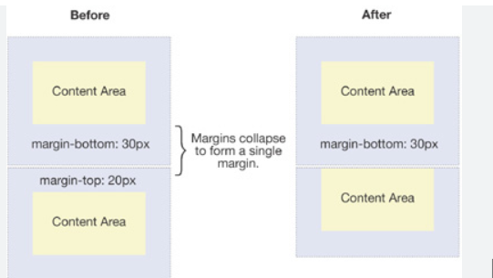

this is first box
this is second box
padding creates a space around its element from all side
margin breaks the element from its parent range like here yellow color divides into two after applying margin
if i write only height i.e. its the height of only content.if after height i write box-sizing:border -box then the total height is content+padding+border (not+ margin)
here after after giving margins,border,padding to both there is overlapping of margins of bottom of first and upper of second and jiski max mergin hai vahi bss ek baar lagegi overlapping area mei
